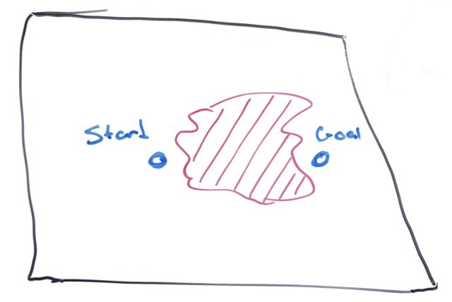

If we have a clear path from a starting point to the goal - that is, one that does not cross a boundary - our route planning is easy. It is just a straight line.
But what if that path crosses a boundary though?

In that case, we need a more sophisticated approach.
Fortunately, Nils Nilsson told us almost everything we need to know about route planning: the A* search algorithm.
Planning a route is pretty much two parts:
We are going to create a gross (or coarse) route quickly, without a huge memory or processor load. This type of route has the advantage that it does not have to be re-planned as the bot experiences minor deviations from the ideal path.
The catch is that A* works by traversing a graph. So the geographic region has to be converted into a graph, small areas that are connected logically.
The simplest method to transform the region into a graph is to
If the region is divided into very small steps, we can skip the boundary crossing check.
To put it another way, the division constant controls how much work we do. The ideal size is coarse enough that we are only checking a handful of points to see that they are in the region (and not crossing a boundary).
The good news is that, unless the region tree is describing a twisty maze with lots of small passages, too coarse is a huge division value. We probably do not need to worry about it too much.
Once the A* algorithm produces a path thru graph, I like to simplify it. This amounts a filtering stage to remove unnecessary waypoints. What is unnecessary?
Smoothing the path is simple:
Take three successive points, and compute the area of the triangle if (area < threshold1) or (the line segment from the first to third point doesn't cross a region boundary) then remove the middle point
The threshold is chosen to be small enough that the path will not cross the boundary.
Now that we have the coarse route, we can benefit from a more detailed route. This route isn't about being fancy. It's about shortening the distance, since the coarse route is so ... coarse.
Remove the node from the coarse path Repeat from step 1
It is very simple to use the fine path:
Remove the node from the coarse path Repeat from step 1
With new position information, that process is repeated.
Next time I'll look at the steering